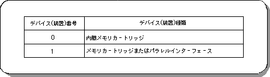
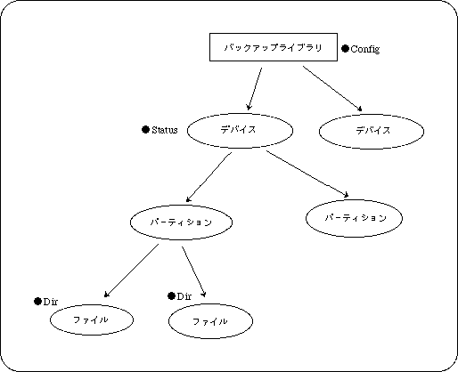

Return to previous page | Return to menu | Go to next page
Sega Saturn has a built-in 32kbyte buffer memory. This chapter describes the backup library for using this built-in buffer memory.
The main body of the backup library is compressed and stored in SEGA Saturn's B00TROM.
You can use this backup library to exchange data with buffer memory and external cartridges.
● Supported devices
Devices such as built-in backup memory and external cartridges (currently these two types) can be accessed in a file format without hierarchical structure (Table 13-1). In addition, these devices are distinguished by partitions, as shown in Figure 13-1.
● Connection information for each device (Config)
The connection information (Config) for each device can be obtained when the backup library is initialized.
● Information for each device (Status: connected / not connected, formatted / unformatted, etc.)
It can be obtained using the backup library function. You can also specify the size of the file you want to write and check if it is writable.


Information for each file (Dir: name, creation time, etc.) can be obtained in the same way using the backup library function.
The file information setting when creating a file is the responsibility of the user when creating the file, and the backup library itself does not create the file information.
The main body of the backup library is compressed and stored in Sega Saturn's BOOTROM. When using the backup library, the user secures the program development area and work area and performs the initial processing. After that, each function can be used.
Caution
The backup library destroys data if processing is interrupted while data is being written. Therefore, when initializing, formatting, writing, or deleting a backup library, use “slResetDisable ()” (peripheral function) in the system library to disable the reset button.